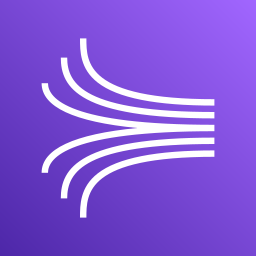
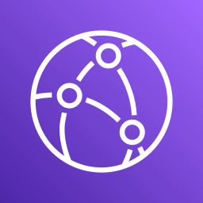
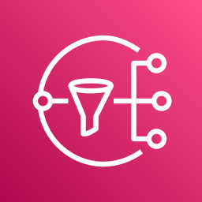

🖼 Lambda: переваги й тригери
Навіщо Lambda
Немає серверів
Коротке виконання
За запитом
Автомасштаб
Платите за запит і час
До 10 ГБ RAM (більше RAM дає більше CPU й мережі)
Free tier: 1 000 000 запитів і 400 000 ГБ-с на місяць.
Тригери

Kinesis
CloudFront
SNSCloudWatch Logs
Приклади
Нове фото в S3
↓
↓
Мініатюра в S3, метадані в DynamoDB
↓
Три способи виклику
Synchronous
- клієнт чекає результат
 ALB, API Gateway, CloudFront, S3 Batch, CLI, SDK, Cognito, Step Functions
ALB, API Gateway, CloudFront, S3 Batch, CLI, SDK, Cognito, Step Functions- помилки й повтори на боці клієнта
Asynchronous
- подія йде в чергу подій
 S3, SNS, EventBridge, CodeCommit, CodePipeline, CloudWatch Logs, SES
S3, SNS, EventBridge, CodeCommit, CodePipeline, CloudWatch Logs, SES Lambda сама повторює; обробка має бути ідемпотентною
Lambda сама повторює; обробка має бути ідемпотентною
При повторах у CloudWatch Logs будуть дублікати записів.
Куди йде невдача (async)
DLQ
- SNS або SQS
- «впала: збережи подію, розберуся потім»
Destination
- успіх: далі в аналітику
- помилка: запусти іншу Lambda
- AWS радить саме його (з листопада 2019), можна обидва
ALB викликає Lambda
Клієнт: HTTP/HTTPS
↓
↓
HTTP-запит перетворюється на JSON для функції